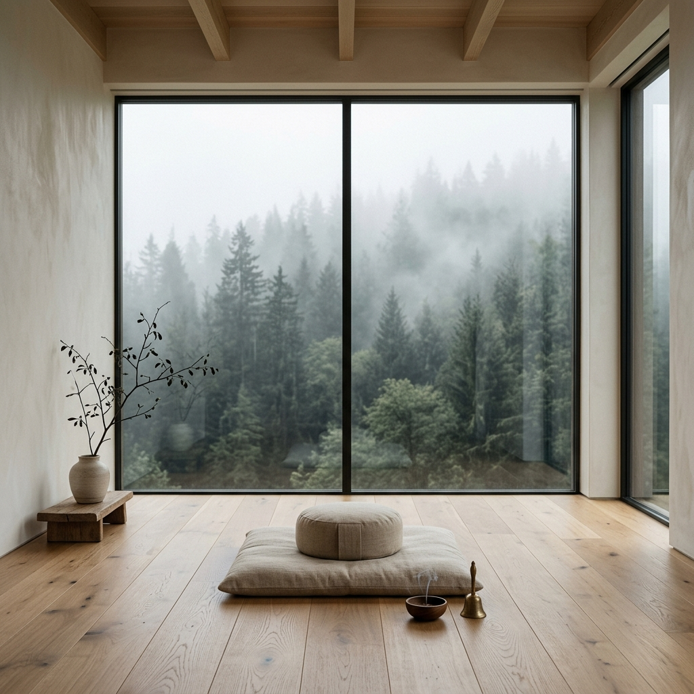

In our sanctuary, silence isn't the absence of sound. It's the presence of peace. Experience the world's most immersive Digital Detox.

"True silence is the rest of the mind, and is to the spirit what sleep is to the body."
We believe that modern life has stolen our ability to simply *be*. Constant notifications have fractured our attention, and the buzz of the city has drowned out our internal rhythm.
Our "Deep Silence" method isn't just about turning off your phone. It's about turning on your awareness through structured meditations, forest-to-plate nutrition, and vibrational healing.
From the surface of noise to the core of your being.
Shedding the digital skin. Handling the "vibration itch" and the initial discomfort of solitude while the nervous system begins to recalibrate.
Physical detox. Your senses heighten. The smell of rain becomes vivid, the sound of the forest becomes a symphony. Deep emotional clearing begins.
The "Silence Barrier" is broken. You enter a state of profound peace where internal dialogue quiets. Epiphanies and deep clarity emerge effortlessly.
Preparing for the return. We provide tools to carry this newfound internal sanctuary back into the world of noise without losing yourself again.